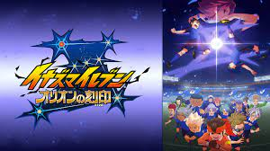

一星の仲間化から総集編挟んで、日常回や予選決勝、本戦1回戦を終えてここから「オリオンの使徒」との戦いが本格化する。と言うところまでで一区切りとさせてもらう。
大分暗雲立ち込めてきた本作だが「チョウキンウンズ」や「バルセロナオーブ」では今までの反則王決定戦みたいなサッカーから打って変わって普通のサッカーをやるようになった。
不愉快極まりない連中にくらべて大分見やすく、キャプテンのクラリオもオリオンでは珍しく正々堂々とした気持ちのいいキャラだった。
だが、試合終了後に「オリオンの使徒が絡まない正々堂々としたサッカー」「気持ちのいいサッカー」をやたらと強調しており、「まともなサッカーをしていない」っていう自覚はあったんだと、微妙な気持ちにさせられる。
また、「オリオンの使徒」と本格的な戦いになる=反則まみれのチンピラチームとの戦いになるの同義みたいなもので、今後の展開に頭を抱えずにはいられない。
ひとまず今回はここまでのキャラ印象について語る章とさせていただく。

稲森明日人
ずっと話を動かせてない。いてもいなくてもいい主人公と思っていたが、日常回の方が存在感発揮している。
今までの罪の償いの一環でチームに必要以上に気負っている一星を気遣うシーンなどは素直に良かったし、年相応な中学生らしい彼を見ることもできた。
こう言う気遣いのできるキャラ、として描かれたのはいいが肝心の試合になると、戦術面では野坂に、ストライカーとしては灰崎に、チームのムードメーカーとしては円堂に仕事が分配され途端に空気化する。
日常回とかで少し「イナビカリダッシュ」を部分的に使って申し訳程度にアピールするが恐らく予選で2回か3回しか使ってない。
あげくそろそろ新必殺技を使うだろうと思い続けてとうとう28話まで来てしまった。
未だ明日人と灰崎の合体シュートもないのに予選決勝戦「チョウキンウンズ」のエース二人の合体シュート見せられてしまう。
「チョウキンウンズ」のキャプテンであるリ・ハオは親も何もない明日人と同じく1から這い上がるキャラとして描かれ、短いながらも対象的な人物との関係の昇華も描かれたのに、なんで明日人でそれが出来なかったのか。
ここまで来るとわざと「明日人を活躍させるな」みたいなオーダーが入っていたのではないかを疑う。
アレスの天秤が全体的に灰崎編と言うムードがあったので、オリオンの刻印が野坂編とするならば。
「幻と消えた3作目で今までの空気ぶりを払拭させる明日人編の案があったのでないか」と思うが、ここまで主人公をハブに扱っておいて3期で突然活躍されてもきっと、乗り切れなかったのだと思うが。
「バルセロナオーブ」戦で唐突に円堂からドリブルが明日人の強みなどと言われ、天馬と丸かぶりした個性を見せつけられるも、やっと主人公らしいどこらか一プレイヤーらしい活躍ができただけ感動すら覚え「教えてやるよ、絶対に止められない田舎者がいるってことを！」と言うセリフで切り返す彼は珍しく格好いいと思えてしまった。
多分、まだ父親が生きてるとかの伏線色々残っているから、巻き返しあるかもしれない。
灰崎凌兵
すっかり牙を抜かれた元フィールドの悪魔。
鬼道さんだけでなく、星章キャプテンの水神谷にも飼いならされて来ている程度には軟化している。
全てを敵と見ていた頃からしたら彼の心境の変化、復讐だけでなく本気でサッカーと向き合うようになった結果を喜ぶべきなのだろうが。
クマのぬいぐるみファンであることやツッコミ役がすっかり板につき過ぎてしまい、当時の自分を見たら恥ずかしさで悶絶するのでないだろうか。
三人目の主人公として扱われている筈だが、本作ではアレスほど話を動かすほどの因縁やエネルギーが殆どなく、エースストライカーとして活躍もするし明日人よりはマシなのだが主人公として見たら空気と言わざるを得ない。
野坂悠馬
オリオンの刻印のメインビジュアルをよく見たらめっちゃ優遇された位置におり、逆に灰崎が大勢枠に下げられている。
「チョウキンウンズ」との試合で軌道が読めたからという理由で、円堂たちキーパー陣が止めるのに手こずっている「天空隼弾」を普通に片足で防いでしまう。
「バルセロナオーブ」戦でもやたら「さすが野坂さん」と持ち上げられる発言が多く、彼が指揮すれば大体のピンチが切り抜けられてしまうので、本当に彼一人で十分なのではというレベルだ。
彼を引き立たせる為に、鬼道さんが離脱したまま戻ってくることなく代表の追加メンバーを探すと言って日本に残ってしまい、彼の活躍の場がなくなってしまったのはチンピラチームの毒牙にかからなくなったことを喜ぶべきなのだろうか。
一星光
1クール目でのやらかしを払拭する為に、戦術の皇帝の補佐役として償いのために得意の情報処理能力を活かすが、以降すっかり棘が抜けてしまい味気のないキャラとなってしまったのは否めない。
彼の元チームの友人と接点がこれから昇華されるのを期待。
円堂守
ダイヤモンド技とかなんか今までの系列から外れた技を唐突に覚えだした。
明日人は切り札らしい。
氷浦
日常パートなんかではセリフ量多かったり明日人の近くで喋ったり探偵ごっこしたり台詞多いからそこそこ恵まれてるように感じるが、試合的には空気。
吹雪、風丸
タップダンス踊らされ、痛がる特訓をやらされ、必殺技もロクに披露する機会がないまま吹雪は怪我で退場となった。
なおその後吹雪がチームの裏切り者として今後なぜか暗躍するという(真意はまだ分からないが)到底吹雪に当てて良い筈もないような役回りを回され不安が募る…
砂木沼
キーパー枠が無印のころでも円堂と立向居の二人でいっぱいだったのに活躍できるはずもなく、またのりかがこの先復帰するのは知っているためにまた彼の活躍の場は与えられるのか。
吉良ヒロト
飛行機には弱いゴッドストライカー
出番も多く灰崎と二枚看板として存在感を発揮しているキャラ。
基山タツヤ
ヒロトとのペア枠を灰崎に取られてしまいベンチウォーマー
西蔭
相変わらず野坂さん大好き
不動明王
初代ベンチウォーマー
ようやく専用個人必殺技貰えた
坂野上
序盤で殺人スパイクを氷の矢で仕留めたのが最初で最後の活躍
剛陣先輩
ファイアーレモネードの弱点も課題も、あの監督は最初から分かっていたはずなのになぜ小僧丸差し置いて最初に選ばれたのか
相変わらず良くも悪くも存在感は強め。ファイアーレモネードに重さを追加した
万作、ゴーレム
何で選ばれた枠